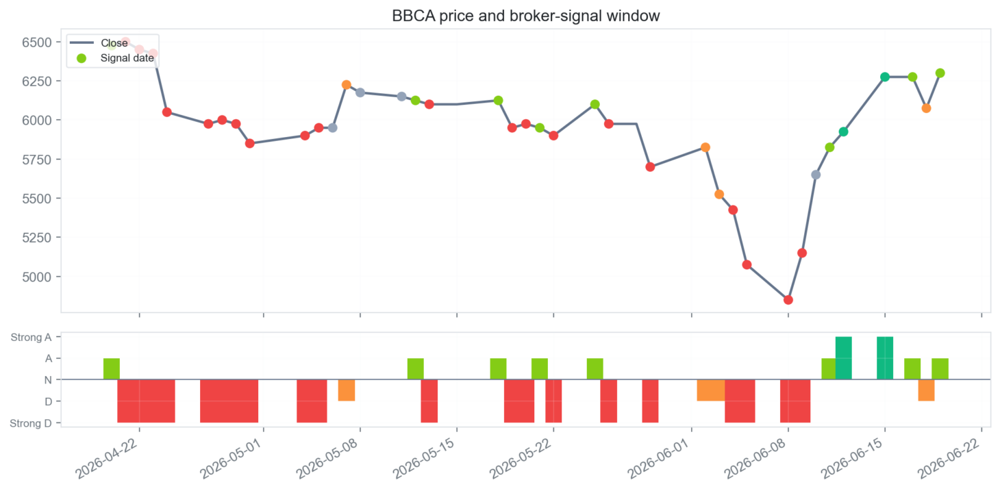
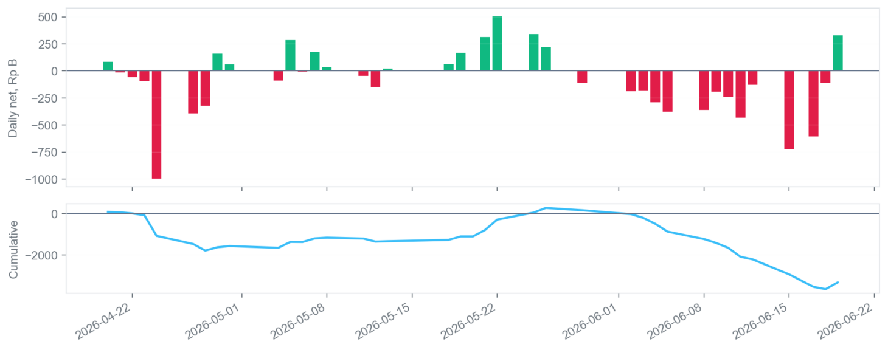
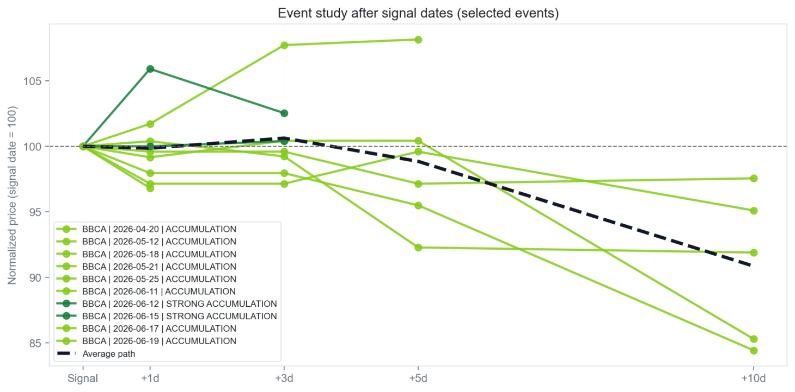
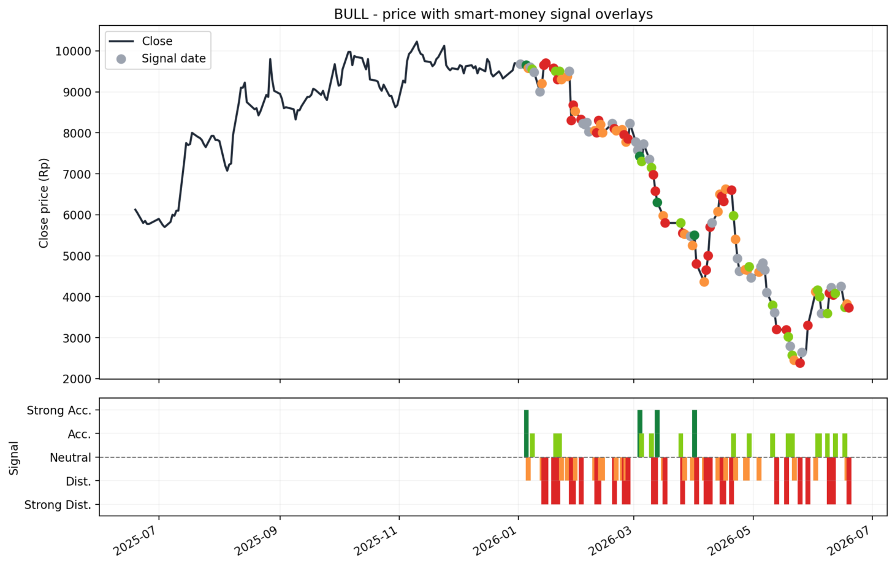
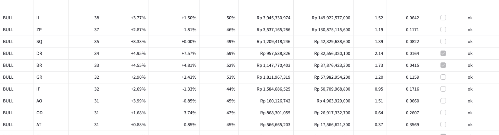
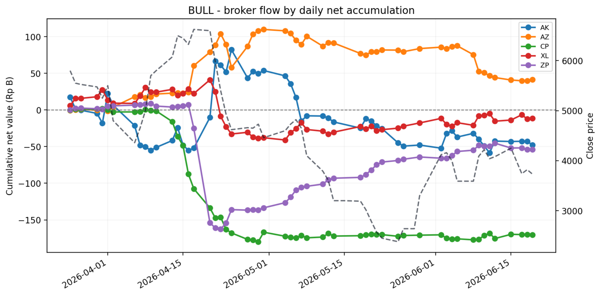
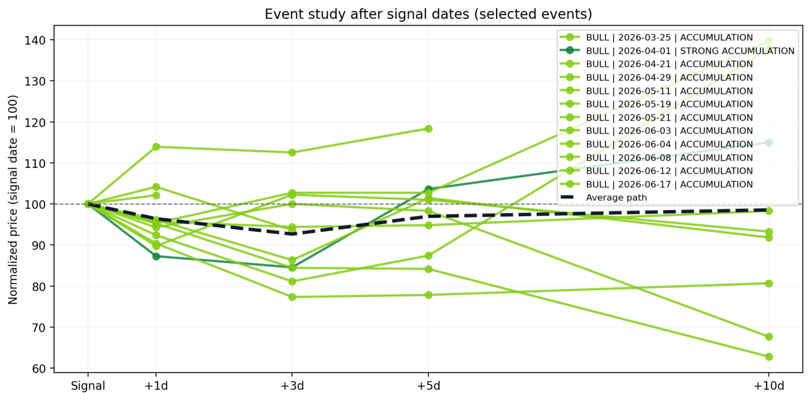
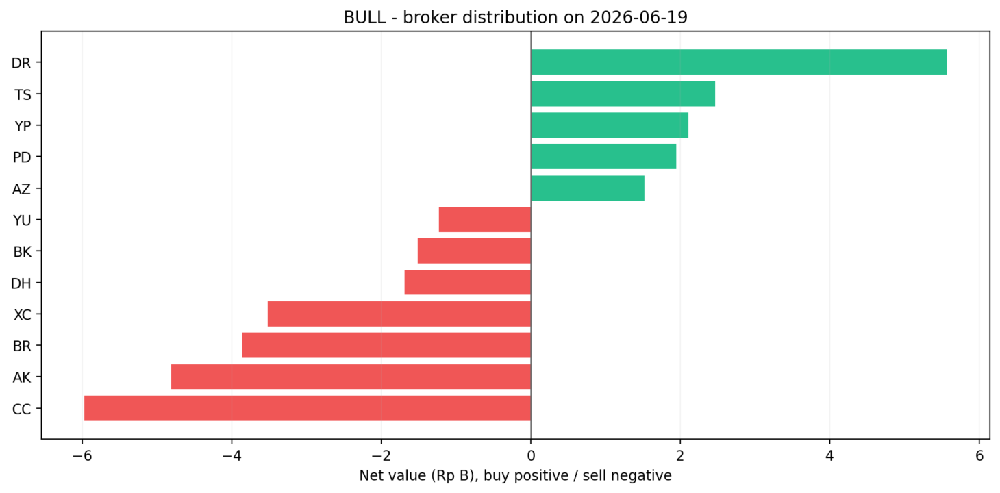

Bandarmology — broker-flow & smart-money analysis for Indonesian stocks
A static snapshot of the live Streamlit dashboard. The same pipeline turns raw Stockbit broker-flow data into accumulation / distribution signals, Granger-causality tests, and broker-specific return validation — for any ticker on the watchlist.
This is a read-only preview built from real dashboard exports (window 2026-03-31 → 2026-06-19). The interactive app runs with streamlit run dashboard/app.py. See the README for the full methodology.
Focused ticker
BBCA
Bank Central Asia
Close (2026-06-19)
~Rp 6,300
rebounded off the June low
Aggregate signal
Accumulation
score +1
Foreign net
+Rp 43.62 B
final signal day
Local net
−Rp 176.58 B
final signal day
Headline case
BBCA caught the June bottom
BBCA fell ~24% from late April to a ~Rp 4,850 trough around 2026-06-08, then rebounded ~30% to ~Rp 6,300 by 2026-06-19. The aggregate signal printed Distribution (red) all the way down, then flipped to Accumulation / Strong Accumulation (green) right at the low — tracking the move instead of fighting it.

Price & signal context. Close (line) with signal-date markers, and the per-day signal strength from Strong Distribution to Strong Accumulation below.

Smart-money flow. Daily broker net (green = net buy, red = net sell) and the cumulative line, which stayed deeply negative (~−Rp 2.8 trillion) even as price recovered — foreign buying into heavy local selling.

Event study. Normalised price paths after each accumulation signal (signal = 100). Strong-accumulation prints popped +5–8% within 1–3 days, but the average path fades to ~−9% by +10 days — a short-term edge, not a durable one.Switch the ticker
BULL — when the aggregate label misleads
Point the same pipeline at BULL and you get the opposite story: it rose +17.18% over 5 days while its aggregate signal read Strong Distribution. The real edge was one level down — lower-volume broker GA carried a statistically significant accumulation pattern (11 events, 73% win rate, p = 0.0053) that the headline label hid.

Price & signal overlay. BULL price with smart-money signal markers.

Broker validation scan. Every broker ranked by how its repeated net buying was followed by forward returns, with a significance filter.

Broker flow. Persistent accumulators stand out as steadily climbing cumulative lines — the classic "bandar" fingerprint.

Event study. Average post-accumulation path drifts above 100 through the +5-day horizon.

Broker distribution. Net buyers (green) vs. net sellers (red) on a single day — who is on each side of the tape.
Not investment advice. A short history, a small watchlist, and multiple-testing risk make these findings exploratory, not production trading signals. Broker codes identify the executing member firm, not the end client; any affiliation note in the README is an observational hypothesis, not an allegation.